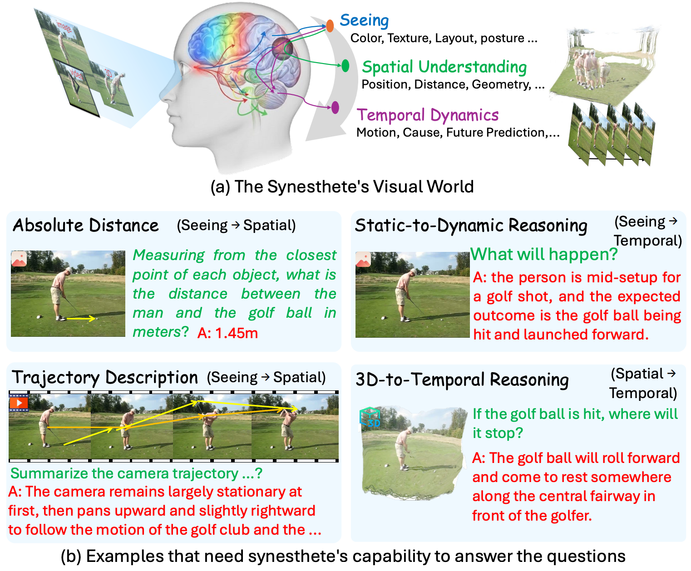
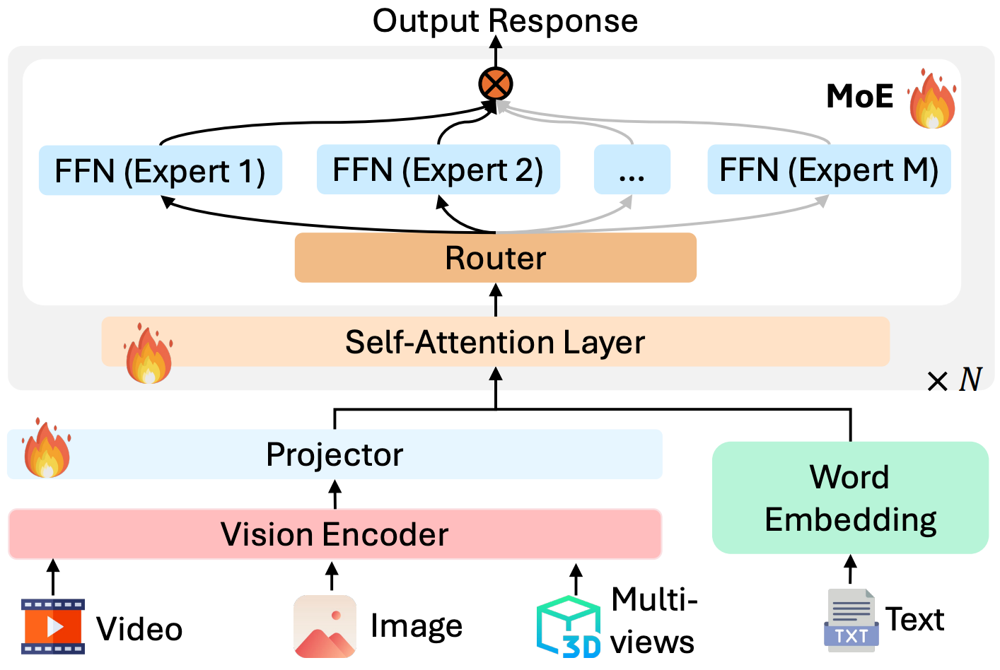
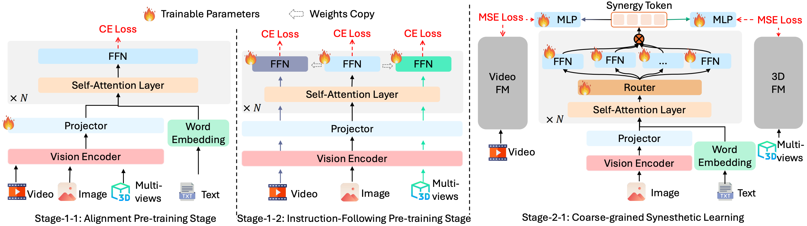
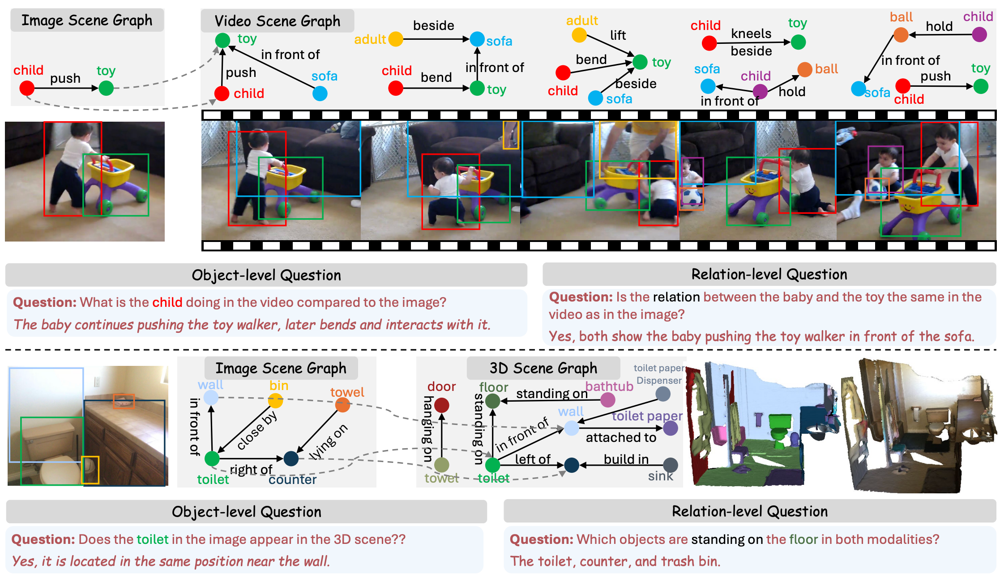
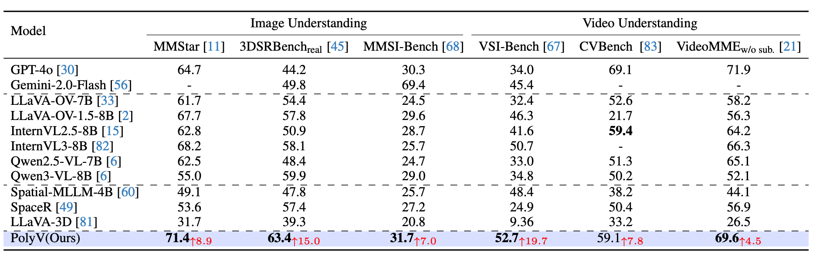
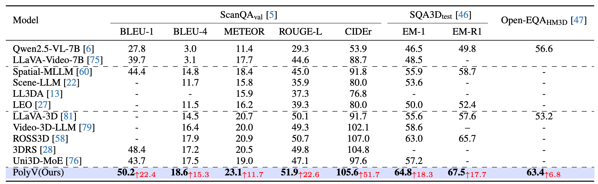
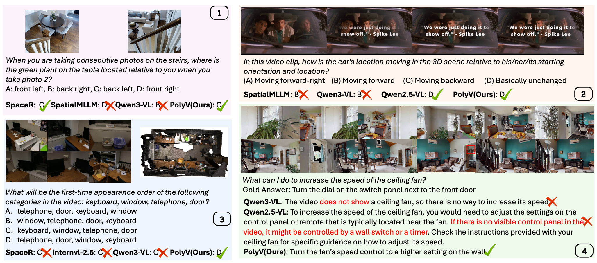

Recent advances in large vision models (LVMs) have shifted from modality-specific designs toward unified architectures that jointly process images, videos, and 3D data. However, existing unified LVMs primarily pursue functional integration, while overlooking the deeper goal of cross-vision synergy: the ability to reason over complementary priors across visual modalities. To address this, we present PolyV, a unified LVM that achieves cross-vision synergy at both the architectural and training levels. Architecturally, PolyV adopts a sparse Mixture-of-Experts LVM coordinated by a dynamic modality router, allowing each expert to specialize in modality-specific priors while enabling bidirectional interaction and mutual refinement across modalities. Training-wise, a synergy-aware paradigm combines modality-specific pretraining with coarse-to-fine synergy tuning via knowledge distillation and object-/relation-level alignment. Extensive experiments on 10 benchmarks spanning image, video, and 3D understanding, including synergy-focused datasets requiring spatial or temporal priors, demonstrate that PolyV consistently outperforms existing models, achieving over 10% average improvement over its backbone. Overall, PolyV establishes a unified framework for synesthetic visual reasoning, advancing toward truly synergistic LVMs.
As illustrated in Figure 1, existing unified LVMs still fall short of achieving true crossvision synergy, that is, synesthetic reasoning across visual modalities, analogous to the human synesthetic visual system. For instance, temporal and motion priors from videos could inform dynamic inference in static images, while 3D geometric priors could enhance spatial reasoning in videos. Consequently, two critical challenges remain underexplored: (i) the lack of synergy-oriented architectural design and (ii) the absence of training strategies that foster cross-vision interaction.

Figure 1: (a) Human perception integrates visual, spatial, and temporal cues synergistically, enabling reasoning across modalities. (b) Examples illustrate such synergy, inferring motion from static images and transferring 3D priors to improve video understanding.
Motivated by the goal of achieving cross-vision synergistic learning, that is, fully exploiting the complementary and distinctive information across visual modalities, we design PolyV, as illustrated in Figure 2. The model comprises a universal vision encoder, a word embedding layer, a projection layer, and multiple stacked LLM blocks integrated with MoE blocks.

Figure 2: An illustration of PolyV, where an MoE architecture is designed to enable synergistic learning across image, video, and 3D modalities. Fire denotes the trainable parameters.
The training strategy of PolyV is designed to foster cross-vision synergy at multiple levels, as illustrated in Figure 3.

Figure 3: Illustration of detailed training stages. Stage-1(-1/2) focuses on enabling model understanding of each vision modality. Stage-2(-1): introduces coarse-grained synergistic learning, where a video and 3D foundation model distill temporal and geometric priors into the MoE-LLM.

Figure 4: Illustration of cross-vision synergy question-answer pairs.
As shown in Figure 5 and Figure 6, PolyV consistently achieves the best overall performance across all image understanding benchmarks, outperforming its backbone Qwen2.5-VL-7B by about 10% on average. on CVBench, which emphasizes spatial consistency and relational reasoning across frames, PolyV exhibits substantial gains over all baselines, underscoring its ability to transfer spatial and temporal priors across modalities effectively. PolyV consistently outperforms its backbone and prior 3D reasoning models, including video-based VLMs and 3DRS.

Figure 5: Comparison of PolyV with existing MLLMs on image and video understanding benchmarks. All models are evaluated under the official benchmark metrics, and average scores are reported. Improvements over the backbone Qwen2.5-VL-7B are marked in red.

Figure 6: Evaluation of 3D question-answering. General 2D VLMs are evaluated in a zero-shot setting. Improvements over the backbone Qwen2.5-VL-7B are marked in red.
Figure 7 presents qualitative examples across diverse visual reasoning tasks. In Cases 1 and 3, PolyV accurately interprets object orientation and viewpoint relations in image-based and multi-view spatial reasoning. In Case 2, focusing on video temporal and spatial understanding, it correctly infers that no spatial state changes occur. Finally, in Case 4, PolyV effectively identifies key spatial cues in 3D environments, producing coherent responses.

Figure 7: Qualitative comparisons between PolyV and existing models. Case 1 is from MMSI-Bench, Case 2 from DSI-Bench, Case 3 from VSI-Bench, and Case 4 from Open-EQA (HM3D).
@article{wu2026polyv,
title={Modeling Cross-vision Synergy for Unified Large Vision Model},
author={Shengqiong Wu, Lanhu Wu, Mingyang Bao, Wenhao Xu, Hanwang Zhang, Shuicheng Yan, Hao Fei, Tat-Seng Chua},
journal={arXiv preprint arXiv:2603.03564},
year={2026}
}